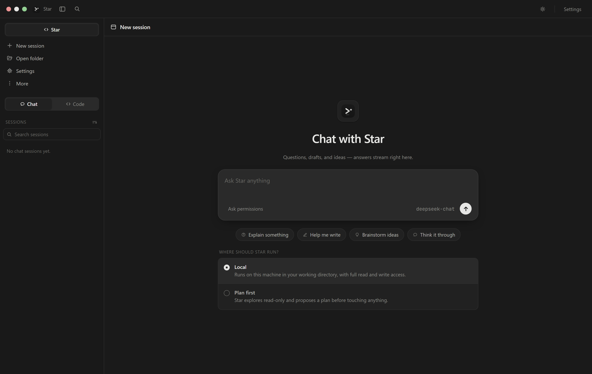
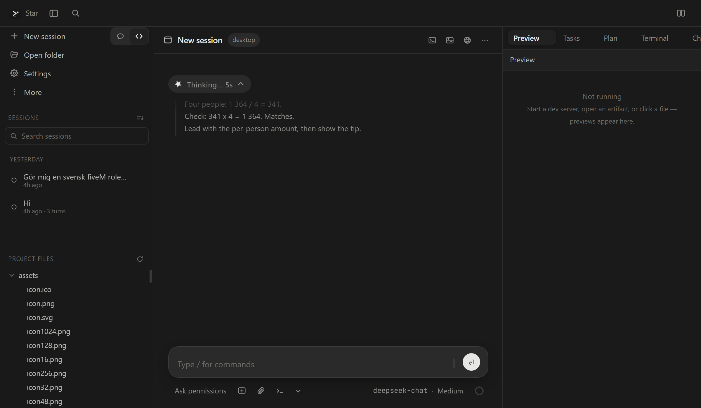
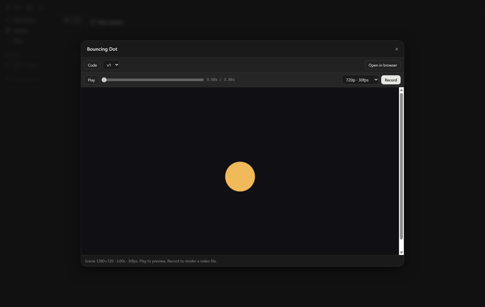
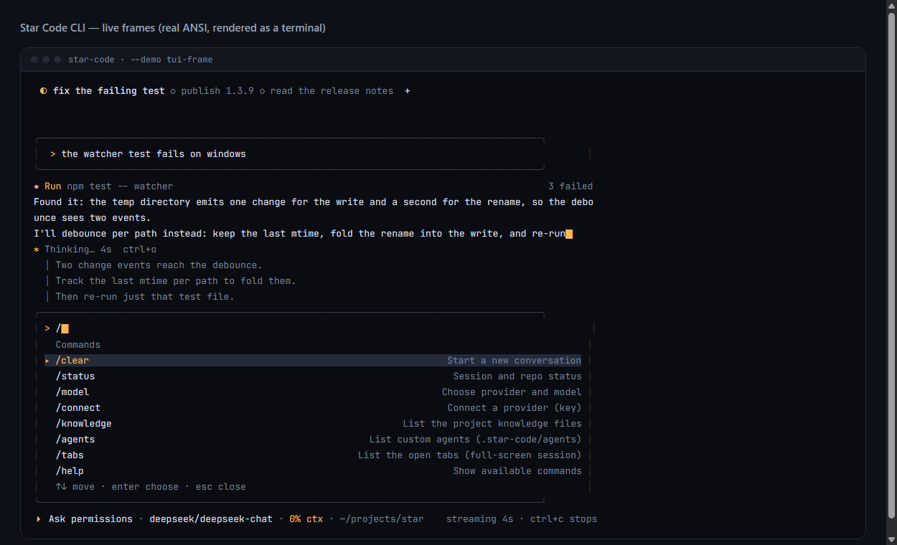
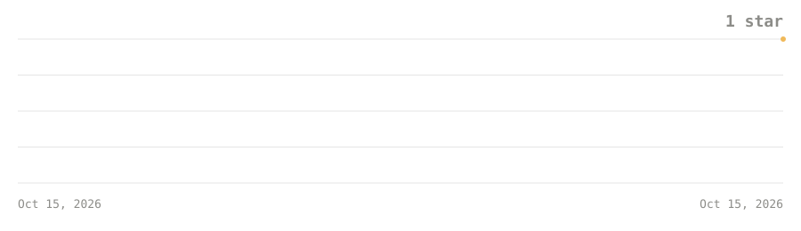

Chat & Code modes
One app, two shapes. Chat is a folderless assistant for questions, drafts and ideas; Code is a full agent that reads, edits and runs commands in your project.
A coding agent & chat assistant for Windows
Your machine, your model, your keys — a coding agent and a chat assistant in one app, plus a full-screen terminal for the agent.
01 — Features
One desktop app, two modes, and a lot of care spent on the parts you stare at all day.
One app, two shapes. Chat is a folderless assistant for questions, drafts and ideas; Code is a full agent that reads, edits and runs commands in your project.
Reasoning shows as a slim pill with a live peek, folds down to one line, and opens into a capped panel when you want it — never louder than the answer.
The agent publishes pages, diagrams and documents right in the app — plus Motion scenes it records to MP4, saved into your project's artifacts/ folder.
Every file the agent fetches is checked end to end: official-source tier, TLS and RDAP owner checks, sha256, the Windows signature, a Defender scan and optional VirusTotal lookups. Nothing runs unless the verdict is CLEAN.
Drop markdown files into .star-code/agents/ and pick one with the task tool. They're read-only by default, so a specialist can't wander off script.
History windowing cut tokens by about 66% on long sessions and repeated file reads by about 89%. Subagents route to each provider's cheapest sensible model. The numbers come from the repo's own measure-savings tool.
02 — Terminal
The same agent loop, tools and credential store as the app — in a full-screen TUI. Session tabs, the same slim thinking pill, and sessions that persist between runs.
Star-Code-CLI-1.4.0.exe
Download and run — standalone, no Node install and no dependencies.
npm i -g star-code-cli-1.4.0.tgz
On Node 18 or newer — installs the star-code command.
PS C:\dev> npm i -g star-code-cli-1.4.0.tgz
PS C:\dev> star-code
star-code 1.4.0 · full-screen session
/help for commands · ctrl+c stops
> fix the failing test03 — Screenshots
Four unedited frames from Windows — the chat landing, reasoning mid-run, a Motion artifact, and the CLI.




04 — Grown in the open
Star is developed in the open: every commit, issue and release lives on GitHub.
